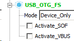
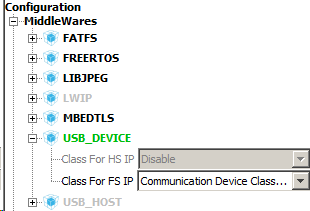
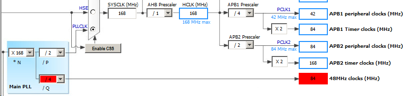
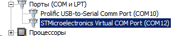
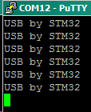
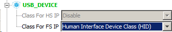
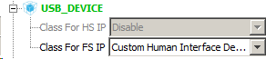
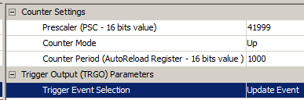
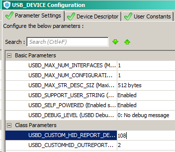

DEVICE mode
CDC (Virtual Com Port)
В Кубе включаем USB в режиме Device:

Поднимаемся по списку в самый верх, там стали активными пункты выбора класса устройства. Выбираем CDC:

При этому Куб может потребоваьт перенастройки тактирования.

Main PLL /Q выставляем 7, чтобы получить требуемую частоту 48МГц. Больше никакие настройки трогать пока не требуется.
Прерывания от USB включаются автоматически.
Компилируем пустой проект и прошиваем. Подключаем плату к ПК по USB. Далее необходимо скачать драйвера с сайта ST. В описке на сайте вводим Virtual Com Port и загружаем. В архиве файл-распаковщик, который создаст 2 файла-установочника (x86 / x64). Используем один из них.
В моем случае после установки драйвера в диспетчере устройств в свойствах COM-порта была ошибка Запуск этого устройства невозможен (код 10). Как один из вариантов устранения подобной ошибки - открываем в проекте файл usbd_cdc.h и находим в нем парамтр:
#define CDC_DATA_HS_MAX_PACKET_SIZE 512 /* Endpoint IN & OUT Packet size */
Меняем размер пакета на 256:
#define CDC_DATA_HS_MAX_PACKET_SIZE 256 /* Endpoint IN & OUT Packet size */
После этого ошибка пропадает.

Только надо учитывать, что при перегенерации кода в Кубе, данная строка перезапишется обратно с параметром 512.
В main.c подключаем файл с функциями:
#include "usbd_cdc_if.h"
Далее рекомендовалось в файле ucbd_cdc_if.c находим функцию CDC_Transmit_FS и в том же файле объявляем ее прототип:
/* USER CODE BEGIN PRIVATE_FUNCTIONS_DECLARATION */
uint8_t CDC_Transmit_FS(uint8_t* Buf, uint16_t Len);
/* USER CODE END PRIVATE_FUNCTIONS_DECLARATION */
Но я так и не понял, зачем. Функция и так видна в main.c
Пишем тестовый код. Попробуем выводить в порт приветствие. Создадим массив, который будем передавать в функцию CDC_Transmit_FS.
while (1)
{
char message[14] = "USB by STM32\n\r";
CDC_Transmit_FS((uint8_t*) message, (uint16_t) 14);
HAL_Delay(1000);
}
Прошиваем и по COM порту видим:

Скорость можно выставлять любую. Хоть 9600, хоть 51200 - работает одинаково.
В файле usbd_cdc_if.c уже автоматически создан буфер uint8_t UserRxBufferFS[2048];
Нам надо его проэкстернить в usbd_cdc_if.h, чтобы испльзовать в основной программе.
/* USER CODE BEGIN EXPORTED_VARIABLES */
extern uint8_t UserRxBufferFS[2048];
/* USER CODE END EXPORTED_VARIABLES */
Далее для приема данных у нас есть функция
static int8_t CDC_Receive_FS (uint8_t* Buf, uint32_t *Len) {...}
в которую мы добавляем свой обработчик:
for(uint16_t i = 0; i < *Len; ++i)
UserRxBufferFS[i] = Buf[i];
Здесь мы копируем содержимое приемного буфера в пользовательский. Функция выглядит следующим образом:
static int8_t CDC_Receive_FS (uint8_t* Buf, uint32_t *Len)
{
/* USER CODE BEGIN 6 */
USBD_CDC_SetRxBuffer(&hUsbDeviceFS, &Buf[0]);
USBD_CDC_ReceivePacket(&hUsbDeviceFS);
for(uint16_t i = 0; i < *Len; ++i)
UserRxBufferFS[i] = Buf[i];
if(*Len < APP_RX_DATA_SIZE)
UserRxBufferFS[*Len] = '\0';
return (USBD_OK);
/* USER CODE END 6 */
}
В данной функции символ конца строки ('\0') работает как ограничитель, который позволяет не перебирать весь массив полностью во время обработки этого буфера в основном цикле и исключает возможность выхода за его пределы. В основном цикле мы считываем массив до конца или пока не наткнемся на ограничитель.
В качестве обработки данных будем выводить их на дисплей:
/* USER CODE BEGIN 2 */
lcdInit();
lcdSendCmnd(0x00);
UserRxBufferFS[0] = '\0';
uint8_t counter = 0;
/* USER CODE END 2 */
while (1)
{
if(UserRxBufferFS[0] != '\0')
{
for(uint16_t i = 0; i < APP_RX_DATA_SIZE; ++i)
{
if(UserRxBufferFS[i] == '\0') //break the cycle if we got a symbol of end of buffer
break;
else
{
if(counter == 32) //go to home and clear display
{
lcdSendCmnd(0x01);
lcdSendCmnd(LCD_HOME);
counter = 0; //clear counter
}
if(counter == 16) //go to second line
{
lcdSendCmnd(LCD_SECOND_LINE);
}
lcdSendCode(UserRxBufferFS[i]); //show data on display
++counter;
}
}
UserRxBufferFS[0] = '\0';
}
}
Если первый символ буфера не равен '\0', значит в нем есть необработанные данные. Перебираем весь массив до [размер буфера - 1] или пока не встретим '\0'. Если такой символ встретился или весь буфер обработан, ограничитель записывается в нулевую ячейку массива. В процессе обработки с помощью счетчика отслеживается положение курсора. Как только курсор встает на 16 или 32 позицию, он, соответственно, переводится на вторую строку или на стартовую позицию с очисткой экрана.
HID
Выбираем режим Device_Only, класс HID:

Больше пока ничего не настраиваем.
Подключаем заголовочный файл с функциями и настройками USB:
/* USER CODE BEGIN Includes */
#include "usbd_hid.h"
/* USER CODE END Includes */
От HID устройства передается REPORT-посылка. Если рассматривать ее с точки зрения мыши, то REPORT имеет следующую стуктуру:
1-й байт - используется только младшие 3 бита. Определяет какая кнопка была нажата.
2-й байт (знаковый) - смещение курсора по оси Х. Положительное значение - вверх, отрицательное - вниз.
3-й байт (знаковый) - смещение курсора по оси Y. Положительное значение - вправо, отрицательное - влево.
4-й байт (знаковый) - прокрутка колесика. Положительное значение - вверх, отрицательное - вниз.
Данные репорты мы будет передавать с помощью функции, описанной в файле usbd_hid.c (каталог Middlewares/USB_Device_Library):
uint8_t USBD_HID_SendReport (USBD_HandleTypeDef *pdev,
uint8_t *report,
uint16_t len)
Заголовочник для данной функции мы уже подключили. Теперь необходимо описать дефайны и буфер для репорта:
/* Private variables ---------------------------------------------------------*/
#define CURSOR_STEP 3
extern USBD_HandleTypeDef hUsbDeviceFS;
uint8_t HID_Buffer[4];
/* USER CODE END PV */
Будем двигать курсор на 3 позиции. Так же необходимо "заэкстернить" дескриптор, чтобы он был виден в нашем главном файле, и создать 4-х байтный буфер, который будет выступать в роли REPORT-пакета.
Формирование пакета вынесем в отдельную функцию.
/* USER CODE BEGIN 0 */
static void GetPointerData(uint8_t* pbuf)
{
static uint8_t cnt = 0;
static uint8_t cursorDirect = 0;
int8_t x = 0, y = 0, button = 0;
//----SOME DATA
if((cnt < 20) && (cursorDirect == 0))
{
x = CURSOR_STEP;
y = CURSOR_STEP;
++cnt;
}
else if(cnt > 0)
{
x = -CURSOR_STEP;
y = -CURSOR_STEP;
--cnt;
}
else cursorDirect = 0;
//----SOME DATA END
pbuf[0] = button; //button state
pbuf[1] = x; //mouse x
pbuf[2] = y; //mouse y
pbuf[3] = 0; //wheel
}
/* USER CODE END 0 */
Пример глупый и синтетический.
cnt отсчитывает количество сдвигов курсор;
cursirDirect определяет направление курсора;
button - определяет была ли нажата какая-то кнопка;
х - определяет сдвиг курсора относительно оси Х;
y - определяет сдвиг курсора относительно оси Y;
while (1)
{
GetPointerData(HID_Buffer);
USBD_HID_SendReport(&hUsbDeviceFS, HID_Buffer, 4);
}
После прошивки МК, можно наблюдать припадочные движения курсора по диагонали.
Custom HID
В настройках выставляем Custom HID Device

Включаем таймер 6 и настраиваем. Разрешаем прерывания, режим триггера - Update Event. Предделитель выставляем 41999, поскольку шина APB1 у нас на 42МГц (prescaler от 0 считается). Counter Period = 1000. С такими параметрами прерывание будет происходить раз в секунду.

Генерируем проект и включаем таймер:
/* USER CODE BEGIN 2 */
HAL_TIM_Base_Start_IT(&htim6);
/* USER CODE END 2 */
После этого собираем код и прошиваем. Скорее всего при подключении по USB винда выдаст ошибку (код 10).
Разбираемся.
Идем по ссылке: http://www.keil.com/pack/doc/mw/USB/html/_u_s_b__descriptors.html
и читаем про дескрипторы. Они делятся на следующие типы:
- Device Descriptor
- Cjnfiguration Descriptor
- Interface Descriptor
- Endpoint Descriptor
- String Descriptor
- Device Qualifier Descriptor
- Report Descriptor
Для изменения дескриптора возьмем HID Descriptor Tool с официального сайта USB.
http://www.usb.org/developers/hidpage/
В файле usbd_custom_hid_if.c мы видим пустой дескриптор репорта:
__ALIGN_BEGIN static uint8_t CUSTOM_HID_ReportDesc_FS[USBD_CUSTOM_HID_REPORT_DESC_SIZE] __ALIGN_END =
{
/* USER CODE BEGIN 0 */
0x00,
/* USER CODE END 0 */
0xC0 /* END_COLLECTION */
};
Допишем в него свои данные. В данном примере использовался:
/* USER CODE BEGIN 0 */
0x06, 0x00, 0xff, // USAGE_PAGE (Generic Desktop)
0x09, 0x01, // USAGE (Vendor Usage 1)
0xa1, 0x01, // COLLECTION (Application)
0x85, 0x01, // REPORT_ID (1)
0x09, 0x01, // USAGE (Vendor Usage 1)
0x15, 0x00, // LOGICAL_MINIMUM (0)
0x25, 0x01, // LOGICAL_MAXIMUM (1)
0x75, 0x08, // REPORT_SIZE (8)
0x95, 0x01, // REPORT_COUNT (1)
0xB1, 0x82, // FEATURE (Data,Var,Abs,Vol)
0x85, 0x01, // REPORT_ID (1)
0x09, 0x01, // USAGE (Vendor Usage 1)
0x91, 0x82, // OUTPUT (Data,Var,Abs,Vol)
0x85, 0x02, // REPORT_ID (2)
0x09, 0x02, // USAGE (Vendor Usage 2)
0x15, 0x00, // LOGICAL_MINIMUM (0)
0x25, 0x01, // LOGICAL_MAXIMUM (1)
0x75, 0x08, // REPORT_SIZE (8)
0x95, 0x01, // REPORT_COUNT (1)
0xB1, 0x82, // FEATURE (Data,Var,Abs,Vol)
0x85, 0x02, // REPORT_ID (2)
0x09, 0x02, // USAGE (Vendor Usage 2)
0x91, 0x82, // OUTPUT (Data,Var,Abs,Vol)
0x85, 0x03, // REPORT_ID (3)
0x09, 0x03, // USAGE (Vendor Usage 3)
0x15, 0x00, // LOGICAL_MINIMUM (0)
0x25, 0x01, // LOGICAL_MAXIMUM (255)
0x75, 0x08, // REPORT_SIZE (8)
0x95, 0x01, // REPORT_COUNT (1)
0xB1, 0x82, // FEATURE (Data,Var,Abs,Vol)
0x85, 0x03, // REPORT_ID (3)
0x09, 0x03, // USAGE (Vendor Usage 3)
0x91, 0x82, // OUTPUT (Data,Var,Abs,Vol)
0x85, 0x04, // REPORT_ID (4)
0x09, 0x04, // USAGE (Vendor Usage 4)
0x15, 0x00, // LOGICAL_MINIMUM (0)
0x25, 0x01, // LOGICAL_MAXIMUM (255)
0x75, 0x08, // REPORT_SIZE (8)
0x95, 0x01, // REPORT_COUNT (1)
0xB1, 0x82, // FEATURE (Data,Var,Abs,Vol)
0x85, 0x04, // REPORT_ID (4)
0x09, 0x04, // USAGE (Vendor Usage 4)
0x91, 0x82, // OUTPUT (Data,Var,Abs,Vol)
0x85, 0x05, // REPORT_ID (5)
0x09, 0x05, // USAGE (Vendor Usage 5)
0x75, 0x08, // REPORT_SIZE (8)
0x95, 0x04, // REPORT_COUNT (4)
0x81, 0x82, // INPUT (Data,Var,Abs,Vol)
0x85, 0x06, // REPORT_ID (6)
0x09, 0x06, // USAGE (Vendor Usage 6)
0x75, 0x08, // REPORT_SIZE (8)
0x95, 0x04, // REPORT_COUNT (4)
0x81, 0x82, // INPUT (Data,Var,Abs,Vol)
/* USER CODE END 0 */
0xC0 /* END_COLLECTION */
После этого мы видим ошибку в компиляции, потому что нужно изменить размер нашего дескриптора. Изменим его в Cube. Закроем проект и в Configuration USB DEVICE внесем 108.

Опять сгенерируем код, откроем проект, соберем его и прошьем контроллер. Как мы видим, ошибка (код 10) в диспетчере устройств исчезла.
В main.c подключаем заголовный файл:
/* USER CODE BEGIN Includes */
#include "usbd_customhid.h"
/* USER CODE END Includes */
Описываем внешний дескриптор USB и создаем буфер для Репорта, а также счетчик:
/* USER CODE BEGIN PV */
/* Private variables ---------------------------------------------------------*/
extern USBD_HandleTypeDef hUsbDeviceFS;
uint8_t ReportToSend[5];
uint8_t counter = 0;
/* USER CODE END PV */
Напишем обработчик прерывания таймера:
/* USER CODE BEGIN 4 */
void HAL_TIM_PeriodElapsedCallback(TIM_HandleTypeDef *htim)
{
if(counter == 0)
{
ReportToSend[0] = 6; //Identificator
ReportToSend[1] = 1; //State
}
else if(counter == 1)
{
ReportToSend[0] = 6; //Identificator
ReportToSend[1] = 0; //State
}
else if(counter == 2)
{
ReportToSend[0] = 5; //Identificator
ReportToSend[1] = 1; //State
}
else if(counter == 3)
{
ReportToSend[0] = 5; //Identificator
ReportToSend[1] = 0; //State
}
//We have a free space in our buffer. Let's use it:
ReportToSend[2] = 'H';
ReportToSend[3] = 'I';
ReportToSend[4] = 'D';
USBD_CUSTOM_HID_SendReport(&hUsbDeviceFS, ReportToSend, 5);
++counter;
if(counter > 3) counter = 0;
}
/* USER CODE END 4 */